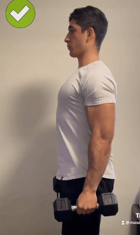
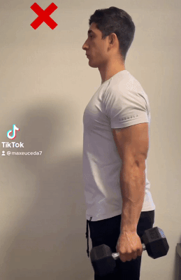

Bicep Curl
 Tips
- Elbows stationary WRT body
- Body not rocking back and forth
- Lift dumbbell up to nipples
Links
Overhead Triceps Extension

Tips
- Elbows always >90 degrees
- Upper arms perpendicular to floor
Links
Overhead Cable Triceps Extension

Tips
- Cable attached at head elevation
- Bend over until upper arm parallel to cable and forearm perpendicular to cable
- Elbows clamping head without touching head
- Lean forward one one foot instead of letting cable keep you upright
Links
Shoulder Press


Tips
- Raise dumbbell vertically upward
- Elbows at 80 degrees WRT mid-sagittal plane
- Back is straight
- Seated with slight lean backward OR standing
- At top: arms are vertical, dumbbells not touching, and elbows not locked
- At bottom, upper arms as low as 45 degrees below horizontal
Links
Pushup

Tips

- Literature found no significant difference between which muscles were activated more in wide and narrow grip pushups
- Can default to having hands be shoulder width apart
- National Library of Medicine

- Chest focused: Elbow remains vertically above hand
- Triceps focused: Forearm bends 45 degrees away from vertical
- Jeremy Ethier perfect pushup youtube


- Hands & fingers unrotated on ground
- Before pushups, rotate hands laterally on ground to move elbows medially.
- Before pushups, rotate shoulder so that elbows move medially.
- Jeremy Ethier perfect pushup youtube
- Saturno movement youtube short


- Athlean-X 10 pushup mistakes
- While pushing up, rotate move elbow medially, to recruit chest muscles more


- Forearm should be mo more than 45 degrees away from mid-sagittal plane to prevent shoulder injury
- Calisthenic movement youtube perfect pushup

- Throughout the pushup, keep shoulders blades depressed inferiorly
- Calisthenic movement youtube perfect pushup

- Retract scapula medially deliberately when moving down, not just letting gravity squeeze scapula together
- Protract scapula laterally when pushing upward until fully protracted at top
- STRIQfit perfect pushup
- FitnessFAQ 10 common pushup mistakes

- Body moves a bit superiorly on the way down so that the fingertips are in line with nipples (rather than neck) when fully down
- Calisthenic movement youtube bad pushups


- Rotate pelvis kyphotically if back is arched lordotically; keep spine straight throughout pushup
- Keep glutes squeezed throughout pushup
- Calisthenic movement youtube perfect pushup

ROM good at top since elbows fully straight, but chest not touching floor

ROM good at bottom since chest touches ground, but elbows not fully straight at top

Good full ROM: chest touching floor at bottom, and elbows fully straight at top
- Full range of motion (ROM): chest touching floor at bottom, and elbows fully straight at top
- It doesn't matter whether elbows are fully locked at top or [slightly less than fully locked] at top
- FitnessFAQs 10 pushup mistakes youtube
- Red Delta Project youtube video about locking elbows

Variation: Sphinx pushup
- Focuses on triceps and abs
- Instructions: Start in plank position, with elbows directly underneath (or a bit inferior to) shoulders, with hands being shoulder width apart. Push up until elbows are fully extended. Keep back and legs straight at all time during the sphinx pushup
- Calisthenic movement youtube perfect pushup
- Fitness Drum
- Cult Fit official

Variation: Pseudo-planche pushup
- Harder variation of pushup with posture similar to a full planche
- Instructions: Start in pushup's top position, then move body superiorly until angle of arm increases past 90 degrees; Full planche angle is about 45 degrees
- Fingers should be pointed 45 degrees (or even 90 degrees) from mid-sagittal plane
- To combat [pushing body inferiorly, can gently touch head to wall throughout pseudo-planche pushup; head must remain in gently contact with wall throughout this exercise
- FitnessFAQs youtube
- Calisthenic movement youtube perfect pushup
- Unconfirmed optional: squeeze chest at top of pushup
- Unconfirmed optional: Remain in pushup's top position for a short while after arms are at muscle failure
Variation: pike pushup

- Focuses on shoulders
- Instructions: Hands and feet 3 feet apart or the smallest dist that hands and feet can both be comfortable flat on floor. Arms can be vertical or slightly in front of or behind face level.
- Same {elbow flare, scapula movement, spine&neck straight, range of motion, moving body superiorly/anteriorly} compared to regular pushup
- Heels lift off floor, while toes are always touching ground
- Keep pelvis angle constant throughout this exercise
- Elevate hands to decrease intensity.
- Elevate feet to increse intensity.